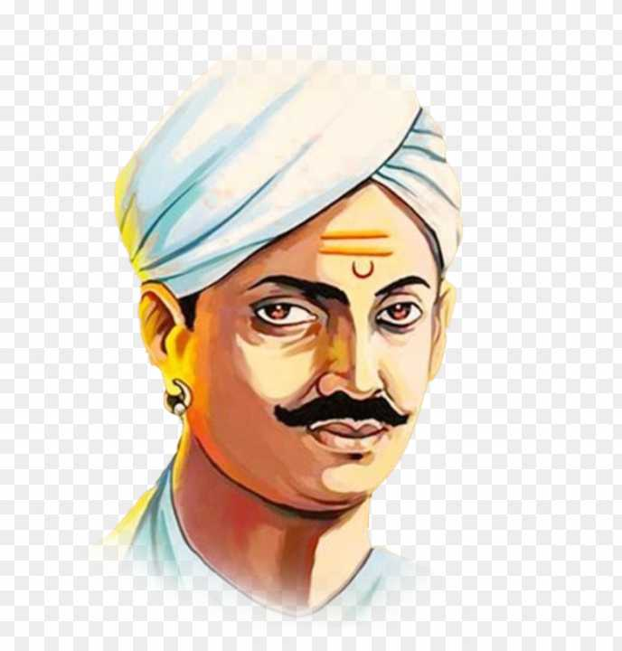

Mangal Pandey was an Indian soldier who played a key part in the events immediately preceding the outbreak of the Indian rebellion of 1857. He was a sepoy in the 34th Bengal Native Infantry regiment of the British East India Company. In 1984, the Indian government issued a postage stamp to remember him
Mangal Pandey
Indian Freedom Fighter

Biography
Mangal Pandey was born in Nagwa, a village of upper Ballia district, Ceded and Conquered Provinces (now in Uttar Pradesh), to a Hindu Brahmin family. Mangal Pandey had joined the Bengal Army in 1849. In March 1857, he was a private soldier (sepoy) in the 5th Company of the 34th Bengal Native Infantry.
The personal motivation behind Mangal Pandey's behaviour remains confused. During the incident itself he shouted to other sepoys: "come out – the Europeans are here"; "from biting these cartridges we shall become infidels" and "you sent me out here, why don't you follow me". At his court-martial, he stated that he had been taking bhang and opium, and was not conscious of his actions on 29 March
"DO OR DIE" - Mangal Pandey